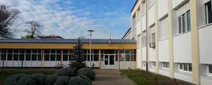

Leon Pastuović Portfolio
Leon Pastuović je dječak koji pohađa TŠRB u svom gradu. On je rođen u obitelji koja je već generacijama vezana za područje strojarstva, što ga je od ranog djetinjstva privuklo tom području. Leon je vrlo marljiv i ambiciozan te je već u prvom razredu pokazao izvanredne rezultate u matematici i fizici. Osim toga, on je aktivan član školskog robotičkog kluba i sudjeluje u raznim natjecanjima i izložbama. Njegov cilj je postati inženjer strojarstva i raditi na razvoju naprednih tehnologija u tom području. Leon je odličan primjer kako marljivo raditi i uspjeti u školi i van nje.

Info
- Leon Pastuović je izvrsni sportaš, posebno u košarci i rukometu. On je član školske košarkaške i rukometne ekipe te osvojio više nagrada na školskim natjecanjima.
- Leon je izvanredan matematičar, a posebno ga zanimaju statistika i teorija brojeva. On je često sudionik matematičkih natjecanja i osvojio nekoliko nagrada.
- Leon je strastveni putnik, voli istraživati nova mjesta i upoznavati nova kulturna iskustva. On je bio na više putovanja u Europu i Aziji.
- Leon je aktivan u volonterskom radu, voli pomoći drugima i raditi na projektima koji imaju pozitivan utjecaj na društvo. On je često sudionik u raznim dobrotvornim akcijama u svom gradu.
- Leon je veliki ljubitelj knjiga, posebno voli čitati knjige iz područja znanstvene fantastike i fantazije. On je član školskog čitateljskog kluba i sudjeluje u raznim diskusijama o knjigama. On se trudi proširiti svoje znanje i razumijevanje svijeta kroz knjige.
Moji interesi: